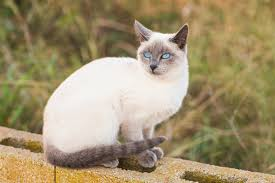

Siamese Cat
The Siamese cat is one of the first distinctly recognized breeds of Asian cat. They are known for their slender bodies, blue almond-shaped eyes, and large ears. Siamese cats are very vocal and enjoy interacting with their owners.
Characteristics
- Origin: Thailand (formerly Siam)
- Life Span: 15-20 years
- Temperament: Social, vocal, and affectionate
- Coat: Short, fine, and requires minimal grooming